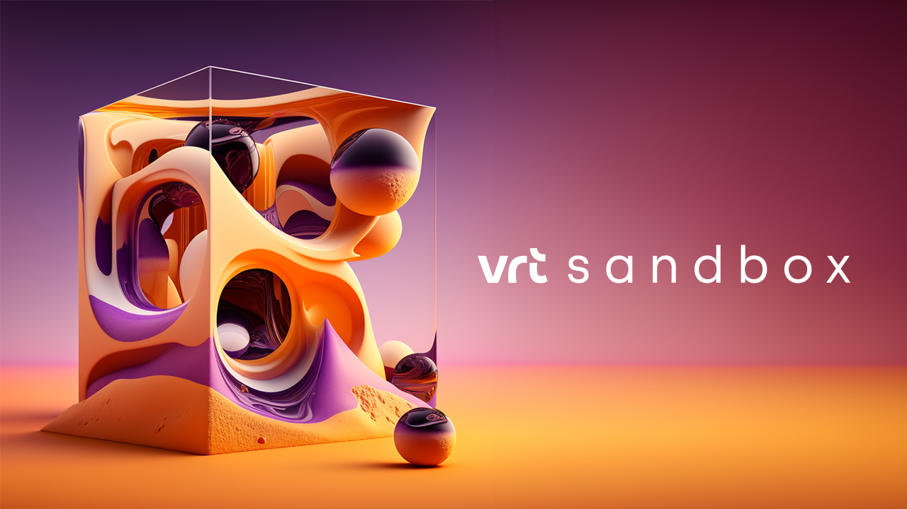

I am a creative and energetic young man with lots of diverse work experiences. I describe myself as a (customer) friendly, flexible, and goal-oriented worker. Problem-solving and improvising are my specialties. I work equally well in groups as I do alone.

Experience.
Throughout my years as a student, I had many jobs. Mostly I made money by being a DJ, but I have other work experiences as well, such as bartender, driver, child supervisor, and sales. I gained the most experience during my internship at VRT, the Flemish National Broadcasting. I worked for VRT Sandbox, helping with a new website, social posts, infographics, and many other tasks. I also learned to use various AI tools such as Midjourney to create visuals.
Hobbies and info.
My interests are diverse. I was with the scouts for 18 years. Nowadays, I play football, go to the gym, and enjoy being a DJ and producing my own music from time to time. I love languages and hope to learn more in the future. I speak Dutch and English fluently, with intermediate proficiency in French and Spanish.